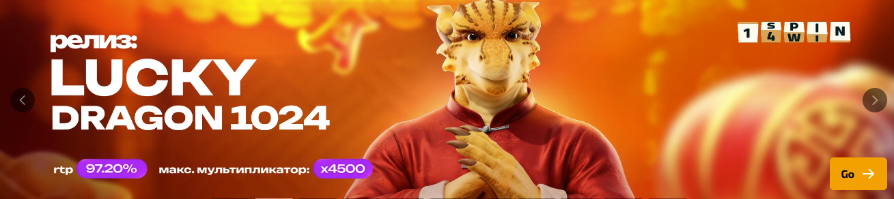

Вход в аккаунт
Если вам нужен сценарий «dragon money casino официальный сайт вход», откройте страницу входа и проверьте рекомендации по паролю и восстановлению.
Страница для тех, кто вводит в поиске формулировки вроде «dragon money casino официальный сайт», «драгон мани казино официальный сайт вход» или «официальный сайт dragon money casino». Здесь собраны признаки корректного ресурса, логика разделов и спокойный порядок действий до авторизации.
Официальный адрес — не «абстракция», а рабочая точка, где сходятся касса, профиль, игры и поддержка. Чем яснее вы понимаете структуру, тем меньше шансов перейти по похожему домену или запутаться в меню в момент, когда нужно быстро подтвердить операцию.
Ниже — обзор без обещаний «гарантированного выигрыша»: только навигация, безопасность и ссылки на соседние материалы про вход, регистрацию и бонусы.

Если вам нужен сценарий «dragon money casino официальный сайт вход», откройте страницу входа и проверьте рекомендации по паролю и восстановлению.
Новый профиль лучше создавать спокойно: регистрация описывает данные, типовые проверки и то, что стоит сделать сразу после создания аккаунта.
После базовой настройки аккаунта логично перейти к бонусам, чтобы не активировать акции «вслепую».
Под «dragon money casino официальный» пользователи обычно подразумевают основной веб-ресурс бренда, где доступны стандартные разделы: авторизация, регистрация, касса, игровой каталог, акции и поддержка. В отличие от сторонних обзоров, официальный сайт — место, где отображаются актуальные условия, персональные статусы и реальные кнопки действий, а не только описательный текст.
Фразы «казино драгон мани официальный сайт» и «драгон мани казино официальный» часто сопровождаются опасением ошибиться в адресе. Поэтому полезно заранее определить «якоря доверия»: привычный логотип, ожидаемый порядок пунктов меню, корректное отображение личного кабинета после входа. Если что-то заметно отличается от прошлого опыта, стоит остановиться и перепроверить источник перехода.
Также важно различать официальный сайт и зеркало. Зеркало может быть легитимным инструментом доступа, но его нужно воспринимать как вспомогательный маршрут, а не как «замену» здравого смысла при проверке адреса. Про альтернативные ссылки у нас отдельно на странице зеркала, а здесь фокус на том, как уверенно работать с основным веб-ресурсом.
Обычно официальный сайт строится как последовательность зон: публичная часть для гостя (лендинг, описание преимуществ, ссылки на регистрацию), затем закрытая часть после входа (баланс, история, настройки безопасности), и наконец — игровая зона, где подключается каталог развлечений. Такая структура удобна, потому что разделяет «маркетинговое знакомство» и «операционные действия».
Касса и верификация — ещё один практический слой. Даже если вас привёл запрос «dragon money casino официальный сайт вход», рано или поздно вы столкнётесь с подтверждением личности и платёжными реквизитами. Чем раньше вы подготовите документы и поймёте, какие статусы бывают у заявок, тем спокойнее пройдёте этот этап без паники в переписке с поддержкой.
Поддержка и справочные материалы на официальном сайте должны быть доступны без «охоты за ссылкой». Если вам приходится долго искать контакты или правила, это сигнал перепроверить ресурс. В нормальной конфигурации важные разделы находятся на расстоянии одного-двух кликов от главной навигации.
Первое преимущество официального сайта — согласованность данных: баланс, бонусы и история операций отображаются в одной системе. Второе — безопасность обновлений: интерфейс и правила меняются централизованно, и пользователю проще отслеживать изменения, чем ориентироваться на устаревшие скриншоты из внешних блогов.
Третье преимущество — прозрачная связка «вход → действие». Когда путь к входу и регистрации очевиден, снижается количество ошибок и лишних обращений в поддержку. Четвёртое преимущество — удобная интеграция акций: страница бонусов помогает понять логику предложений, а активировать их рациональнее уже в официальной среде, где видны персональные статусы.
Наконец, официальный сайт лучше подходит для постепенного изучения сервиса. Вы можете спокойно пройтись по разделам, не спеша сохранить нужные подсказки и вернуться к игре позже — без давления «сделать всё за минуту», которое часто сопровождает случайные лендинги.
Пошаговый порядок для спокойного старта через официальный ресурс.
Запрос «драгон мани казино официальный сайт вход» объединяет два желания: попасть на правильный домен и сразу авторизоваться. Это разумно, но лучше разделять этапы: сначала убедиться, что сайт тот, затем вводить учётные данные. Такой порядок снижает риск фишинга, когда форма входа выглядит правдоподобно, но домен или детали интерфейса отличаются.
Если вы используете несколько устройств, синхронизируйте привычки: один и тот же способ сохранения закладки, одинаковые проверки SSL, одинаковый порядок действий в кассе. На первый взгляд это мелочи, но именно они формируют устойчивую «цифровую гигиену», которая защищает аккаунт лучше любых обещаний «суперзащиты».
Для сравнения ожиданий и реальности полезно заглянуть в отзывы и обзор: там собраны нюансы интерфейса и типовые замечания пользователей. Это не замена официальным правилам, но хороший способ понять, на что обратить внимание в первые сессии.
Если планируете мобильный сценарий, заранее посмотрите раздел скачать: иногда приложение или мобильная версия даёт более устойчивый доступ к уведомлениям и кассе, особенно в пути.
Обзор помогает структурировать вопросы и термины поиска, а официальный сайт — место, где отображаются персональные данные, реальные статусы платежей и актуальные правила. Сравнивайте информацию, но финальные решения принимайте по содержимому официального интерфейса.
Сверяйте адрес и привычные элементы интерфейса, избегайте переходов из непроверенных сообщений. Если интерфейс изменился резко и неожиданно, перепроверьте источник перехода и не вводите данные в спешке.
На отдельных страницах: вход и регистрация. Там собраны типовые вопросы про пароль, восстановление и подготовку аккаунта.
Остановитесь. Проверьте адрес, сертификат соединения, отличия в меню. При необходимости откройте зеркало только из источников, которым вы доверяете, и сравните поведение страницы.
Акции отображаются в профиле и требуют согласия с условиями. Читайте бонусы заранее: так вы избежите ситуации, когда бонус активирован, а отыгрыш не совпадает с вашим стилем игры.
Лучше после базовой настройки аккаунта и знакомства с разделами. Игровой контент описан на странице казино, где собраны формулировки вроде «dragon money casino онлайн» и логика старта.